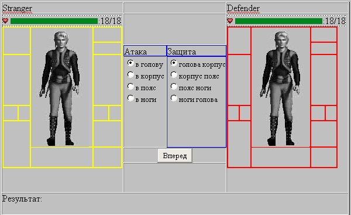
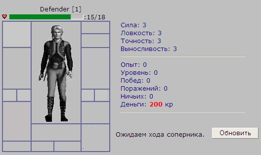
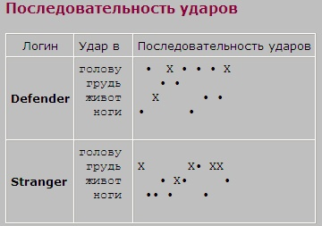
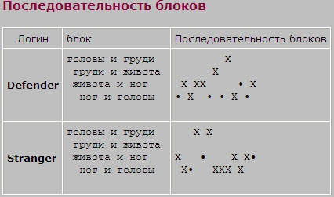

|
Курсы
Регистрация
Методика
Оглавление
Для учащихся

Статьи
Инструменты
Контакты
|
Урок
8. Проведение боя
8.1.
Таблицы боя. Удары и блоки .
Итак, мы постепенно подобрались к самой
важной части игры - проведению поединка. Мы ранее уже рассматривали тестовый
бой, который реализовали исключительно на JavaScript.
Теперь же нам предстоит использовать язык сценариев
PHP и нашу базу
mmclub на MySQL
для реализации поединка.
Для начала, давайте создадим справочную табличку для однозначного
определения зон ударов и блоков, которая пригодится нам впоследствии.
/*Справочник зон*/
CREATE TABLE `body_zones` (
`BZ_ID` SMALLINT(1) unsigned NOT NULL DEFAULT 0,
`BZ_NAME` CHAR(20) NOT NULL DEFAULT '',
PRIMARY KEY (`BZ_ID`)
) TYPE=MyISAM; |
и заполним ее значениями:
INSERT INTO body_zones(BZ_ID,BZ_NAME) values(1,'Голова');
INSERT INTO body_zones(BZ_ID,BZ_NAME) values(2,'Грудь');
INSERT INTO body_zones(BZ_ID,BZ_NAME) values(3,'Живот');
INSERT INTO body_zones(BZ_ID,BZ_NAME) values(4,'Ноги'); |
Для описания поединка нам также понадобятся две таблицы. Первая
(назовем ее - battle) будет служить для определения текущего состояния
боя в целом, вторая (ее название будет - battledetails) дополнит первую,
сохраняя в себе каждый ход сражающихся соперников.
Таблица battle будет выглядеть так:
/* Таблица поединка 1 х 1 */
CREATE TABLE `battle` (
`BAT_ID` BIGINT unsigned NOT NULL auto_increment,
/*ID поединка*/
`USER1_ID` bigint(20), /*ID 1 игрока*/
`USER2_ID` bigint(20), /*ID 2 игрока*/
`TIMEOUT` SMALLINT(2), /*Таймаут*/
`STARTTIME` DATETIME, /*время начала
поединка*/
`M1` SMALLINT(1) unsigned NOT NULL DEFAULT 0,
/*Ход первого*/
`M2` SMALLINT(1) unsigned NOT NULL DEFAULT 0,
/*Ход второго*/
`LASTMOVE` DATETIME, /*время последнего
хода*/
`STATUS` SMALLINT(1), /*статус поединка
1-идет,2-завершен*/
PRIMARY KEY (`BAT_ID`)
) TYPE=MyISAM;
|
Так
как мы будем рассматривать кулачный поединок двух соперников, нам понадобится
хранить их идентификаторы (
USER1_ID и
USER2_ID). Таймаут из
заявки перейдет в эту таблицу (поле
TIMEOUT). Для
отслеживания времени, нам естественно понадобится время начала поединка (будем
хранить в поле -
STARTTIME).
Для того, чтоб знать какой из игроков походил, а какой еще
нет в активной фазе боя, предусмотрены поля и
M1 ,
M2 в которых должны
содержаться флаги хода (MOVE)
для первого и второго игроков соответственно. Значение 0
(ноль) в таком поле означает, что игрок еще не сделал хода, 1 (один) - игрок
походил. Для проверки соответствия таймауту, будем также хранить время
последнего хода, для чего предусмотрено поле
LASTMOVE.
И последнее - поле
STATUS, для того чтоб
определять статус поединка, 1-идет, 2-поединок закончился.
Таблица детализации поединка, выглядит так:
/* Таблица детализации поединка 1 х 1 */
CREATE TABLE `battledetails` (
`BATDET_ID` BIGINT unsigned NOT NULL auto_increment,
/*ID строки хода*/
`BAT_ID` BIGINT unsigned NOT NULL DEFAULT 1, /*ID
поединка*/
`USERID` bigint(20), /*ID игрока сделавшего ход*/
`ATTACK` SMALLINT(1) unsigned NOT NULL DEFAULT 0,
/*Зона атаки*/
`DEFEND` SMALLINT(1) unsigned NOT NULL DEFAULT 0,
/*Зона защиты*/
`MESSAGE` CHAR(255) NOT NULL DEFAULT '',
/*Описание действия....куда нанес удар и т.д.*/
PRIMARY KEY (`BATDET_ID`)
) TYPE=MyISAM; |
В этой таблице, мы сохраняем идентификатор поединка, чтоб связать ее с главной
таблицей боя -
battle. Поле
USERID хранит
идентификатор игрока, сделавшего последний ход. Поля
ATTACK и
DEFEND содержат зоны
удара и блока (которые мы определили в таблице
body_zones). Что
касается поля
MESSAGE, то мы его
зарезервируем для текстового описания нанесенных ударов и поставленных блоков.
Скачать добавленные таблицы можно
здесь.
8.2.
Вход в поединок.
Давайте в нашу таблицу
users добавим еще одно поле:
|
Character_Status INT DEFAULT 1, /*
1-обычное состояние,2-в бою, 3-бой окончен (смотрим результат), 4-в
транспортном средстве */ |
которое
определит текущее состояние нашего героя. Это поле понадобится нам чуть позже. А
сейчас мы немного видоизменим файл
zayavka.phtml, который мы разрабатывали в прошлом
уроке. Нам необходимо сделать две кнопки - "Начать бой" и
"Отказать". Первая кнопка, как ясно из ее названия должна переводить игроков из
заявки непосредственно в фазу боя, а вторая кнопка, дает возможность отказаться
от боя. Обе эти кнопки доступны только подающему заявку.
После добавления этих кнопок, наш код в файле
zayavka.phtml будет выглядеть
так:
if ($aNick2 != ''){
print("<INPUT TYPE=radio NAME=gocombat
value=$aUserID disabled><font color=green>".$aTime."</font><b> ".$aNick."
</b>[$aLevel1] против <b>".$aNick2." </b>[$aUserLevel] тип боя: <img src=Items\fighttype".$aBattleType.".gif>
(таймаут $aTimeOut мин)");
print('<INPUT class=btn TYPE=button value="Начать
бой" id="battle" NAME="battle" onClick="gotoBattleCheck()"> ');
print('<INPUT class=btn TYPE=button value="Отказать"
id="decline" NAME="decline" onClick="otkazZapros()"><br>');
} |
При
нажатии на кнопку отказать, срабатывает
JavaScript функция
otkazZapros(),
которая описывается следующим образом:
function otkazZapros(){
location.href='zayavka.phtml?otkaz=1&level=fiz&NickName=<?php
echo $aNickName; ?>';
} |
В
PHP этот параметр (otkaz=1)
обрабатываем стандартным образом:
// отказываем принявшему
if (!empty($_GET['otkaz'])){
$lOtkazZapros = 1;
} |
и далее
реализация:
// Отозвали запрос - уберем из 2ой части
принявшего
if ($lOtkazZapros){
$query = "UPDATE zayavki SET CHAR2_NAME='',
level2='' where CHAR1_NAME='$aNickName'";
$result = mysql_query($query) or
die("Query failed : " .
mysql_error());
$aUser2ID = 0;
$lInZayavka2 = 0;
} |
таким образом мы
очищаем вторую часть заявки - то есть, по сути выкидываем из заявки принявшего.
При нажатии игроком на кнопку "Начать бой" срабатывает функция
gotoBattleCheck(),
которая выглядит так:
function
gotoBattleCheck(){
location.href='battlecheck.phtml?NickName=<?php
echo $aNickName; ?>';
} |
Эта функция
передает управление в файл
battlecheck.phtml,
который занимается некоторыми проверками перед началом поединка.
Код проверки предельно прост:
// Узнаем статус заявки перед поединком
$query = "SELECT * FROM zayavki where
CHAR1_NAME='$aNickName'";
$result = mysql_query($query) or
die("Query failed : " .
mysql_error());
$line = mysql_fetch_array($result);
$aChar2 = $line["CHAR2_NAME"];
$aTimeOut = $line["ZTIMEOUT"]; // таймаут
$aType = $line["ZTYPE"];
// тип боя
if( $aChar2 <> '' )
// успели отозвать запрос ?
{
// меняем на статус - юзеры 1 и 2 в поединке
$query = "UPDATE users SET Character_Status=2,Character_CurHealth=Character_Endurance*6
WHERE Nick_Name='$aNickName' OR Nick_Name='$aChar2'";
$result = mysql_query($query) or
die("Query failed : " .
mysql_error());
// создадим новый поединок:
$query = "INSERT INTO BATTLE
(CHAR1_NAME,CHAR2_NAME,STARTTIME,TIMEOUT,STATUS) values ('$aNickName','$aChar2',Now(),$aTimeOut,1)";
$result = mysql_query($query) or
die("Query failed : " .
mysql_error());
// удаляем заявку перед поединком
$query = "DELETE FROM zayavki WHERE
CHAR1_NAME='$aNickName'";
$result = mysql_query($query) or
die("Query failed : " .
mysql_error());
print('<SCRIPT>location.href="battle.phtml?NickName='.$aNickName.'";</SCRIPT>');
}
else print('<SCRIPT>location.href="zayavka.phtml?NickName='.$aNickName.'";</SCRIPT>'); |
Так
как, только подающий заявку инициирует начало поединка, то проверяется в этом
файле только возможность отозвать запрос вторым игроков из заявки (if(
$aChar2 <> '' ))
Далее скрипт создает новую запись в таблице боев
battle, удаляет заявку и меняет статус играющих (Character_Status=2),
после чего переправляет игроков на страничку battle.phtml.
8.3.
Проведение поединка.
Страница battle.phtml,
которую мы сделаем в этом уроке, управляет ходом поединка. После того как
отработал скрипт, содержащийся в файле battlecheck.phtml,
оба игрока должны увидеть следующую картину в своем браузере:

Мы уже рассматривали в предыдущих урок принципы проведения боя.
Поэтому вы уже знаете, что каждый из противников должен выбрать зону атаки
(голова, корпус, пояс, ноги) и зоны защиты (голова-корпус, корпус-пояс,
пояс-ноги и ноги-голова) и нажать на кнопку "Вперед". За проверки нанесения
ударов и блоков теперь отвечает не код на языке JavaScript
на стороне клиента, а алгоритм в нашей PHP
страничке battle.phtml.
Вначале мы должны узнать кто есть кто
в строке записи поединка:
// узнаем каким номером мы находимсяя в строке боя
CHAR1 или CHAR2, кто наш противник
// и кто уже успел сделать ход ?
$query = "SELECT
BAT_ID,CHAR1_NAME,CHAR2_NAME,M1,M2 FROM battle WHERE CHAR1_NAME='$aNickName'
OR CHAR2_NAME='$aNickName'";
$result = mysql_query($query) or
die("Query failed : " .
mysql_error());
$aRow = mysql_fetch_array( $result);
$aBattleID = $aRow["BAT_ID"];
$aChar1 = $aRow["CHAR1_NAME"];
$aChar2 = $aRow["CHAR2_NAME"];
$aMove1 = $aRow["M1"];
$aMove2 = $aRow["M2"]; |
После этого нужно уточнить характеристики сражающихся персонажей:
// определим некоторые параметры char1 и char2
// 1
$query = "SELECT * FROM users WHERE Nick_Name='$aChar1'";
$result = mysql_query($query) or
die("Query failed : " .
mysql_error());
$aRow = mysql_fetch_array( $result);
$aStrength1 = $aRow["Character_Strength"];
$aEndurance1 = $aRow["Character_Endurance"];
$aCurHealth1 = $aRow["Character_CurHealth"];
// 2
$query = "SELECT * FROM users WHERE Nick_Name='$aChar2'";
$result = mysql_query($query) or
die("Query failed : " .
mysql_error());
$aRow = mysql_fetch_array( $result);
$aStrength2 = $aRow["Character_Strength"];
$aEndurance2 = $aRow["Character_Endurance"];
$aCurHealth2 = $aRow["Character_CurHealth"]; |
Теперь на примере первого игрока рассмотрим алгоритм хода.
if ( $aNickName == $aChar1 ){
// Мы под первым номером
$aShowEndurance1 = $aEndurance1;
$aShowHealth1 = $aCurHealth1;
$aShowEndurance2 = $aEndurance2;
$aShowHealth2 = $aCurHealth2;
$aOrder = 1;
$aOpponentNick = $aChar2;
// Проверим походил ли соперник
if (($aMove1 == 1) & ($aMove2 ==
0)){
print('<SCRIPT>location.href="wait.phtml?NickName='.$aNickName.'&bat_id='.$aBattleID.'";</SCRIPT>');
}
if ($aMove1 == 0){
// мы не делали ход, делаем его
сейчас!
if (!empty($_POST['attack']))
{
$aAttack = $_POST['attack'];
$aDefend = $_POST['defend'];
$query = "INSERT INTO battledetails (BAT_ID,CHAR_NAME,ATTACK,DEFEND)
values ($aBattleID,'$aNickName',$aAttack,$aDefend)";
$result = mysql_query($query) or
die("Query failed : " .
mysql_error());
// установим флаг хода для 1 игрока
$query = "UPDATE battle set M1=1 where
CHAR1_NAME='$aNickName'";
$result = mysql_query($query) or
die("Query failed : " .
mysql_error());
print('<SCRIPT>location.href="battle.phtml?NickName='.$aNickName.'";</SCRIPT>');
}
}
if (($aMove1 == 1) & ($aMove2 == 1)){
// расчитываем damage для обоих персонажей
CalcDamage($aChar1,$aChar2,$aBattleID);
// считаем повреждения
print('<SCRIPT>location.href="battle.phtml?NickName='.$aNickName.'";</SCRIPT>');
}
} else { .... |
Вначале мы определяем, походил ли наш оппонент. Если мы уже делали ход, а
противник запаздывает с ответным ходом, то мы должны немного подождать, для чего
мы будем переадресованы на страницу wait.phtml. В
эту страницу передается ник персонажа и идентификатор боя.
Если мы еще не ходили ($aMove1
== 0), то программа считывает
полученные методом POST значения параметров attack
и defend и помещает их в таблицу
детализации поединка battledetails. Затем
происходит запись в главную таблицу боя battle
флага, что игрок походил. Это осуществляется установкой поля M1
в единицу (для первого игрока).
Если второй игрок перед этим уже тоже успел сделать ход (($aMove1
== 1) & ($aMove2 == 1)) то
все данные для расчета повреждений уже есть и мы вызываем функцию
CalcDamage()
которая и занимается этими делами.
Код функции CalcDamage
выглядит так:
function CalcDamage($aChar1,$aChar2,$aBattleID){
// обнуляем флаги ходов игроков
$query = "UPDATE battle set M1=0, M2=0
where BAT_ID=$aBattleID";
$result = mysql_query($query) or
die("Query failed : " .
mysql_error());
// параметры 1 игрока
$query = "SELECT * FROM users WHERE Nick_Name='$aChar1'";
$result = mysql_query($query) or
die("Query failed : " .
mysql_error());
$aRow = mysql_fetch_array( $result);
$aStrength1 = $aRow["Character_Strength"];
$aCharLevel = $aRow["Character_Level"];
$aCurHealth1 = $aRow["Character_CurHealth"];
// параметры 2 игрока
$query = "SELECT * FROM users WHERE Nick_Name='$aChar1'";
$result = mysql_query($query) or
die("Query failed : " .
mysql_error());
$aRow = mysql_fetch_array( $result);
$aStrength2 = $aRow["Character_Strength"];
$aCharLevel2 = $aRow["Character_Level"];
$aCurHealth2 = $aRow["Character_CurHealth"];
// кто куда ударил и что блокировал
// первый игрок
$query = "select * from battledetails WHERE
CHAR_NAME='$aChar1' order by batdet_id DESC limit 1";
$result = mysql_query($query) or
die("Query failed : " .
mysql_error());
$aRow = mysql_fetch_array( $result);
$aAttack1 = $aRow["ATTACK"];
$aDefend1 = $aRow["DEFEND"];
// второй игрок
$query = "select * from battledetails WHERE
CHAR_NAME='$aChar2' order by batdet_id DESC limit 1";
$result = mysql_query($query) or
die("Query failed : " .
mysql_error());
$aRow = mysql_fetch_array( $result);
$aAttack2 = $aRow["ATTACK"];
$aDefend2 = $aRow["DEFEND"];
// считаем повреждения, с учетом блоков
// куда бил игрок 1 и что блокировал игрок 2 ?
if ( ! Blocked($aAttack1,$aDefend2)
){
$aCurHealth2 = $aCurHealth2 - $aStrength1;
$aCurHealth2 = $aCurHealth2 < 0 ? 0 : $aCurHealth2;
$query = "UPDATE users set Character_CurHealth=$aCurHealth2
where Nick_Name='$aChar2'";
$result = mysql_query($query) or
die("Query failed : " .
mysql_error());
}
// куда бил игрок 2 и что блокировал игрок 1 ?
if ( ! Blocked($aAttack2,$aDefend1)
){
$aCurHealth1 = $aCurHealth1 - $aStrength2;
$aCurHealth1 = $aCurHealth1 < 0 ? 0 : $aCurHealth1;
$query = "UPDATE users set Character_CurHealth=$aCurHealth1
where Nick_Name='$aChar1'";
$result = mysql_query($query) or
die("Query failed : " .
mysql_error());
}
} |
Вначале мы обнуляем флаги ходов (поля M1 и M2),
так как фаза хода завершилась. Затем выбираем самые последние записи для наших
игроков из таблицы battledetails для того чтоб
узнать значения полей attack и
defend.
После этого используем функцию
Blocked в
качестве аргументов которой передаются значения атаки одного игрока и защиты
второго, чтоб определить заблокирован ли удар или попал в незащищенное блоком
место. Код функции Blocked
приведен ниже:
function Blocked($a,$d){
$def = array(1=>'12',2=>'23',3=>'34',4=>'41');
if( strpos($def[$d],$a)
=== false ){
$retv = false;
}else{
$retv = true;
}
return ($retv);
} |
Функция производит анализ на вхождение значения атаки в
строку определяющую зоны блока. Так, например, если игрок заблокировал зоны
голова-корпус нажав на первую радио-кнопку в форме поединка, то параметр
$d функции
Blocked,
примет значение 1, в массиве
$def это соответствует строке
'12' так как блокируются, на самом деле, две зоны.
В конце концов функция
Blocked,
вернет false,
если удар не попал в блок и true,
если удар заблокирован.
Если удар достиг цели, то функция
CalcDamage
про изведет расчет повреждений по простой формуле Здоровье игрока = Здоровье
игрока - Сила удара. Ну и, естественно, сделает проверку, чтоб здоровье не стало
отрицательным.
Затем параметры рассчитанного здоровья ($aCurHealth1
и $aCurHealth2) записываются
в таблицу users.
8.4.
Сообщения о результатах хода/боя
Чтобы видеть, как протекает
поединок, нужно выдавать в клиентский браузер
информацию о его ходе.
Во первых, как мы уже говорили, если один игрок ждет другого,
то его взору должна предстать картинка ожидания хода соперника. Для ее
отображения служит файл
wait.phtml.

Во-первых PHP код
в этом файле, проверяет ходы нашего персонажа и соперника, чтоб знать, не
пора ли снова возвращаться к странице battle.phtml.
За это отвечает следующий фрагмент кода:
if( $aCharStatus == 2 ){
if ( $aNickName == $aChar1 ){
// Мы под первым номером
if ( $aMove1 == 0 ){
print('<SCRIPT>location.href="battle.phtml?NickName='.$aNickName.'";</SCRIPT>');
}
}
if ( $aNickName == $aChar2 ){
// Мы под вторым номером
if ( $aMove2 == 0 ){
print('<SCRIPT>location.href="battle.phtml?NickName='.$aNickName.'";</SCRIPT>');
}
}
$message = "Ожидаем хода соперника. ";
} else { ..... |
Если
поединок закончен, файл
wait.phtml должен тоже
это показать. В файле
battle.phtml есть такой
фрагмент когда, который проверяет, не исчерпалось ли здоровье наших героев? :
// Поединок закончен ?
if ( ($aCurHealth1 == 0) ||
($aCurHealth2 == 0) ){
// Устанавливаем статус 3 (чтоб посмотреть
результаты)
$query = "UPDATE users set Character_Status
= 3 where Nick_Name='$aChar1' or Nick_Name='$aChar2'";
$result = mysql_query($query) or
die("Query failed : " .
mysql_error());
// установим статусы после боя, согласно
сохранившегося здоровья
$query = "UPDATE battle set
R1=$aCurHealth1,R2=$aCurHealth2 where CHAR1_NAME='$aChar1' or
CHAR2_NAME='$aChar2'";
$result = mysql_query($query) or
die("Query failed : " .
mysql_error());
print('<SCRIPT>location.href="wait.phtml?NickName='.$aNickName.'&bat_id='.$aBattleID.'";</SCRIPT>');
} |
Если
здоровье одного или обоих игроков упало до нуля, значит бой завершен и мы
переводим игроков в статус 3 (Character_Status
= 3) и вызываем страничку
wait.phtml, чтоб показать
результат поединка. В поля
R1 и
R2 - таблицы
battle записываются
значения оставшегося после боя здоровья наших персонажей.
Для чего это нужно? Допустим бой закончен и один игрок
отлучился от компьютера, второй уже восстановил здоровье после боя и его
Character_CurHealth
естественно будет отличаться от
того, которое было на момент завершения поединка. А поля
R1 и
R2 навсегда сохранят параметры
здоровья в состоявшемся бое.
Зная, эти значения мы можем вывести результаты поединка в
файле
wait.phtml таким образом:
...
$aChar1StatusAfterBattle = $aRow["R1"]; //
осталось ли здоровье у первого после боя (если бой завершен)
$aChar2StatusAfterBattle = $aRow["R2"]; //
осталось ли здоровье у второго после боя (если бой завершен)
...
...else { // бой
окончен
// Устанавливаем статус 1 (нормальное состояние)
$query = "UPDATE users set Character_Status = 1
where Nick_Name='$aChar1' or Nick_Name='$aChar2'";
$result = mysql_query($query) or
die("Query failed : " .
mysql_error());
print('<SCRIPT> mode = 2; </SCRIPT>');
if ( $aNickName == $aChar1 ){
if($aChar1StatusAfterBattle>$aChar2StatusAfterBattle){
$message = "Поединок завершен. <b>Вы победили!</b> ";
}elseif($aChar1StatusAfterBattle<$aChar2StatusAfterBattle){
$message = "Поединок завершен. <b>Вы проиграли!</b> ";
}else{
$message = "Поединок завершен <b>вничью</b>. ";
}
}
if ( $aNickName == $aChar2 ){
if($aChar2StatusAfterBattle>$aChar1StatusAfterBattle){
$message = "Поединок завершен. <b>Вы победили!</b> ";
}elseif($aChar2StatusAfterBattle<$aChar1StatusAfterBattle){
$message = "Поединок завершен. <b>Вы проиграли!</b> ";
}else{
$message = "Поединок завершен <b>вничью</b>. ";
}
} |
Смотрите
полный код в файле
wait.phtml здесь.
8.5.
Краткая
статистика боя.
В учебных целях, мы создадим краткую статистику результатов
боя. Которая покажет нам все удары и блоки игроков в процессе поединка.
Статистика будет создаваться файлом stat.phtml
и этот файл будет доступен по ссылке:
| $StatUrl = "<a
target=_blank href=stat.phtml?bat_id=$aBattleID> (Статистика)</a>" |
генерируемой в
конце поединка в файле wait.phtml. То есть, как
Вы видите, в скрипт stat.phtml
передается идентификатор поединка. Сперва мы
должны прочитать данные из таблицы детализации battledetails
по каждому игроку и сохранить
их в строковых параметрах:
// читаем статистику боя
$query = "SELECT CHAR_NAME, ATTACK, DEFEND
FROM battledetails WHERE BAT_ID=$aBattleID";
$result = mysql_query($query) or
die("Query failed : " .
mysql_error());
while ($aRow =
mysql_fetch_array($result)) {
$aChar = $aRow["CHAR_NAME"];
$aAttack = $aRow["ATTACK"];
$aDefend = $aRow["DEFEND"];
if ( $aChar == $aChar1 ){
$AStat1 .= $aAttack;
$DStat1 .= $aDefend;
}
if ( $aChar == $aChar2 ){
$AStat2 .= $aAttack;
$DStat2 .= $aDefend;
}
} |
После этого переменные
$AStat1 и
$DStat1 , а
также $AStat2
и $DStat2
будут содержать ряд чисел символизирующих собой номера
зон поражения и защиты первого и второго игрока на протяжении всего
поединка.
Теперь нашей задачей будет - визуализация в табличной форме
этих данных. У нас должны получиться две таблицы
- "Таблица последовательности ударов" и
"Таблица последовательности блоков".
Последовательность ударов в табличной форме реализуем
следующим кодом на PHP и HTML:
<TABLE cellSpacing=0
cellPadding=4 border=1>
<TBODY>
<TR>
<TD align=middle>Логин</TD>
<TD>Удар в</TD>
<TD>Последовательность ударов</TD>
</TR>
<TR>
<TD noWrap> <b><?php echo $aChar1
?></b> </TD>
<TD noWrap><PRE>голову<BR>
грудь<BR> живот<BR>
ноги</PRE></TD>
<TD noWrap>
<?php
print('<PRE>');
for($i=1;$i<=4;$i++){
$pos = 0;
$pl = "";
while ( $pos ++ <
strlen($AStat1)){
if( substr($AStat1,$pos,1) == $i ){
if ( ! Blocked(substr($AStat1,$pos,1),substr($DStat2,$pos,1))
){
$pl.= "X";
} else {
$pl.= "<B>•</B>";
}
}else{
$pl.= " ";
}
}
print($pl);
if( $i<>4 ) print("<BR>");
}
?>
</PRE>
</TD>
</TR>
<TR>
<TD noWrap> <b><?php echo $aChar2
?></b></TD>
<TD noWrap><PRE>голову<BR>
грудь<BR> живот<BR>
ноги</PRE></TD>
<TD noWrap>
<?php
print('<PRE>');
for($i=1;$i<=4;$i++){
$pos = 0;
$pl = "";
while ( $pos ++ <
strlen($AStat2)){
if( substr($AStat2,$pos,1)
== $i ){
if ( ! Blocked(substr($AStat2,$pos,1),substr($DStat1,$pos,1))
){
$pl.= "X";
} else {
$pl.= "<B>•</B>";
}
}else{
$pl.= " ";
}
}
print($pl);
if( $i<>4 ) print("<BR>");
}
?>
</PRE></TD></TR>
</TBODY>
</TABLE> |
В вышеприведенном коде мы анализируем при помощи нашей знакомой функции
Blocked какие удары
достигли цели, а какие были заблокированы и выводим их в соответствующие
места сводной таблицы в разрезе зон поражения (голова,грудь,живот,ноги)
Результат будет
отображаться на странице браузера в таком виде:

Последовательность блоков в табличной форме реализуем следующим
кодом на PHP и HTML:
<H4><font color="#8F003F">Последовательность
блоков</font></H4>
<TABLE cellSpacing=0 cellPadding=4 border=1>
<TBODY>
<TR>
<TD align=middle>Логин</TD>
<TD>блок</TD>
<TD>Последовательность блоков</TD>
</TR>
<TR>
<TD noWrap> <b><?php echo $aChar1
?></b> </TD>
<TD noWrap><PRE>головы и груди<BR>
груди и живота<BR> живота и ног<BR>
ног и головы</PRE></TD>
<TD noWrap>
<?php
print('<PRE>');
for($i=1;$i<=4;$i++){
$pos = 0;
$pl = "";
while ( $pos ++ <
strlen($DStat1)){
if( substr($DStat1,$pos,1)
== $i ){
if ( ! Blocked(substr($AStat2,$pos,1),substr($DStat1,$pos,1))
){
$pl.= "<B>•</B>";
} else {
$pl.= "X";
}
}else{
$pl.= " ";
}
}
print($pl);
if( $i<>4 ) print("<BR>");
}
?>
</PRE>
</TD>
</TR>
<TR>
<TD noWrap> <b><?php echo $aChar2
?></b></TD>
<TD noWrap><PRE>головы и груди<BR>
груди и живота<BR> живота и ног<BR>
ног и головы</PRE></TD>
<TD noWrap>
<?php
print('<PRE>');
for($i=1;$i<=4;$i++){
$pos = 0;
$pl = "";
while ( $pos ++ <
strlen($DStat2)){
if( substr($DStat2,$pos,1)
== $i ){
if ( ! Blocked(substr($AStat1,$pos,1),substr($DStat2,$pos,1))
){
$pl.= "<B>•</B>";
} else {
$pl.= "X";
}
}else{
$pl.= " ";
}
}
print($pl);
if( $i<>4 ) print("<BR>");
}
?>
</PRE></TD></TR>
</TBODY>
</TABLE> |
Результат
блокирования будет
отображаться на странице браузера в таком виде:

В случае ударов символом • - обозначаются заблокированные удары, а
символом X
- удары достигшие цели. В случае блоков символом • -
обозначаются пропущенные удары, а символом
X -
удачно поставленные блоки.
Полный
текст файла stat.phtml смотрите
здесь
В следующем уроке мы рассмотрим примеры использования магии в поединках,
добавим слот для хранения магического свитка, создадим магазин по продаже
магических товаров и научимся защищаться от атак с использованием магии.
|
|